Scene & effects
Tap a gem to audition its effect. This board is an animation surface, not a scored match.
Consumer controls
Motion and sound begin off. System reduced-motion preference always takes priority. Settings belong only to this workshop.
Ready.
Icon & gem library
26 scalable symbols and five labeled elemental shields. Choose an asset to download its SVG.
Animation director
Preview the same keyframes interactively, then export them for an app adapter.
Sprite atlas packer
Pack local PNG artwork into a single image with a companion frame map. Up to 32 files, 1 MiB each, 32 MiB total, 2048 × 2048 per image. Combined artwork is capped at 16 million pixels. Output is capped at 4096 × 4096.
World artwork
Vector scene and building tiers. Download SVG artwork to adapt it to each app’s palette.

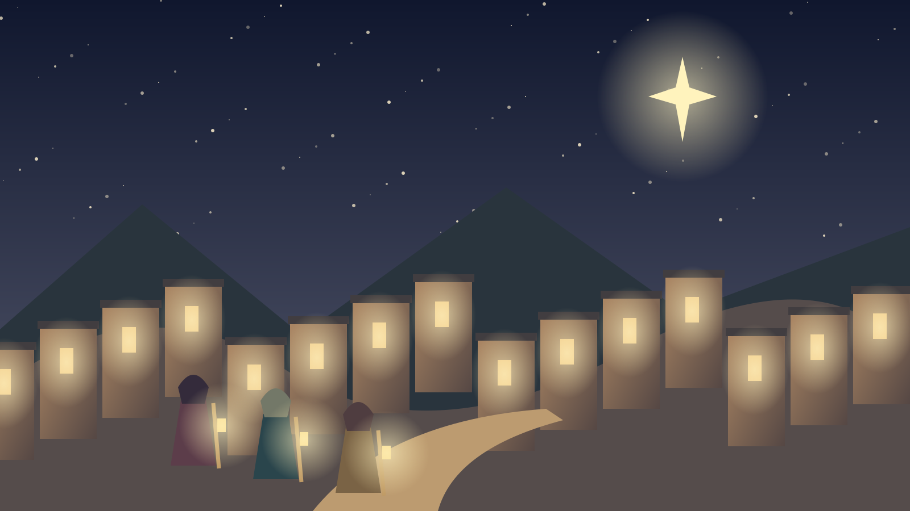
bethlehem-night
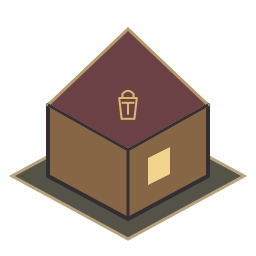
camp-tier-1
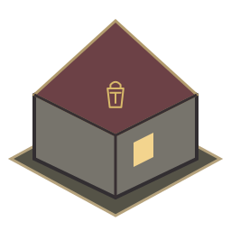
camp-tier-2
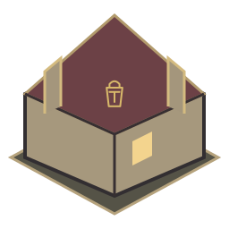
camp-tier-3forge-tier-1

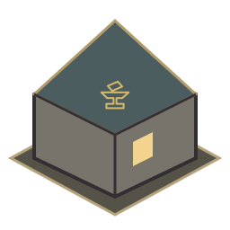
forge-tier-2
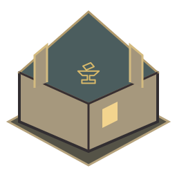
forge-tier-3
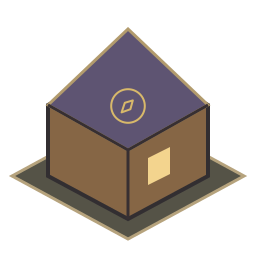
observatory-tier-1
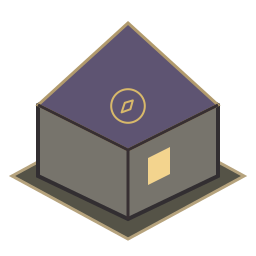
observatory-tier-2
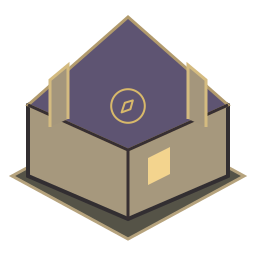
observatory-tier-3
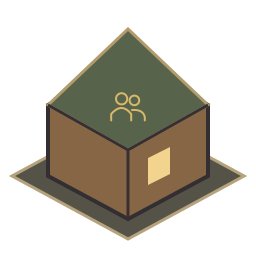
hall-tier-1
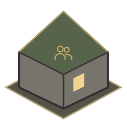
hall-tier-2
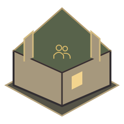
hall-tier-3The 63-option catalogue
Search the three archetypes and review original proposals alongside separate implementation notes. Selecting a record does not enable a runtime feature.